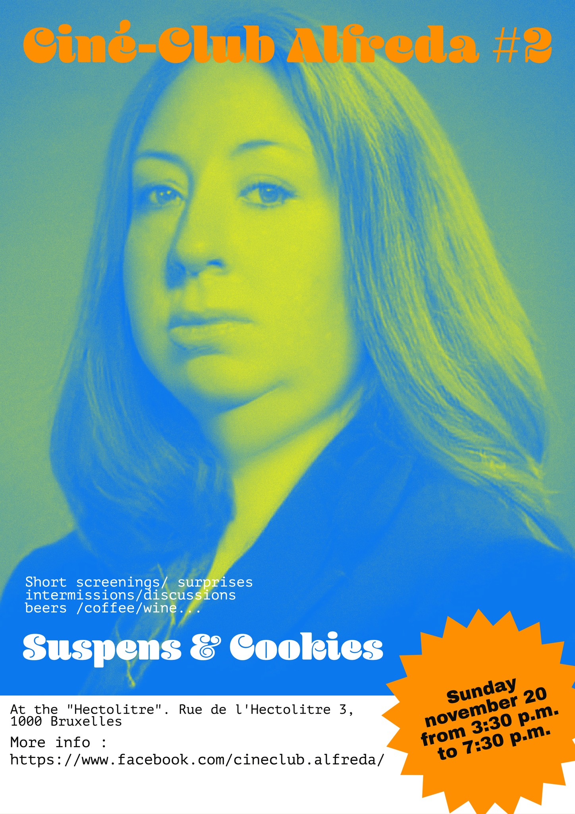

Ciné-Club Alfreda #2
Dimanche 20 novembre à 15h30
Dans un petit lieu très cinématographique ( ancien club échangiste ) équipé d'un petit écran, de petites chaises et d'un petit bar, tout petit Ciné-club Alfreda possiblement foutraque.
Ciné-club Alfreda #2
S8 Martine Doyen/ "Special" Grégoire Verbeke ( en présence du réalisateur)
+ Surprises
Grégoire Verbeke (°1987) is a filmmaker and cinematographer. Being on the move and replacing himself in different environments are essential to his practice.
His work explores the themes of nature and the interaction between the body and its environment.
Verbeke graduated in Ancient Greek language and literature at the Ghent University in 2012.
From onwards 2013 until 2016 he worked as a 1st assistant director on The Land of the Enlightened in Afghanistan.
His short documentaries Bjeshkë (2018) and I Feel Your Eyes (2019) has been shown at Sheffield Doc Fest, Palm Springs Shortfest and DOK Leipzig.
His latest short film Crosswinds (2022), a collaboration with the Egyptian dance duet Nafaq, is been shown internationally.
In recent years Verbeke created music videos for Altın Gün, Eefje De Visser, Nafaq, Lander & Adriaan, Quelle Chris, Merope and BeraadGeslagen
Programme:
- "Melocake", un film S8 de Martine Doyen (1991) 8'
- Surprise
- Présentation Grégoire Verbeke
Bjeshkë (Mountain) (2018) - 15min
Springtime in northern Albania sparks the herding of goats from the lowlands, up to the towering mountainsides.
Prek Gjoni is moving his livestock with the help of Jovalin. Will broken shoes and an umbrella suffice for the 4-day walk?
I Feel Your Eyes (2019) - 17min
As the sun rises above a forgotten pyramid, Mahmoud saddles his horse Asefa besides a desert race track.
This is how they prepare for their daily training. Friday, all eyes will be on them. Mahmoud senses the fear inside him. Will he be able to win the race one more time?
Crosswinds (2022) - 8min
A woman looks around in her dream. Deserted landscapes and invisible things are left. The wind carries her memories.
- Q&A Grégoire Verbeke.
Le tout entrecoupé d'entractes conviviaux (bar : Koffie, thea, wine, bières/ jardin: cigarettes)
OUVERTURE DES PORTES 15h30
Projections à partir de 16h
PAF : 5 Euros
Enfants : gratuit
PS: Pullover conseillé.
Il y aura également des exemplaires à vendre de mon livre « Alfreda Hitchcock _and_Sisters » au comptoir.